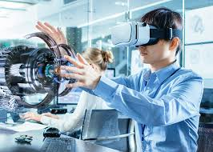

El diseño, que cumple un papel fundamental en las formas de comunicación modernas,
se ha visto revolucionado por el proceso de digitalización que ha atravesado el
sector de la comunicación. La digitalización de audio, vídeo, texto e imagen ha
elevado el nivel de interactividad mediática y permite a los profesionales
colaborar en un amplio campo de actividades, lo que ha supuesto un cambio
radical en los métodos de trabajo del diseñador que ha tenido que familiarizarse
con una amplia gama de procesos de producción. Se le exige ahora no sólo que muestre
visión y creatividad, sino que domine toda una serie de nuevas habilidades..
A través de la presentación de conceptos y metodologías del diseño esenciales,
el Manual de diseño gráfico digital examina los principios que apuntalan un diseño
gráfico bueno y eficaz y explora los distintos ámbitos del diseño gráfico (impresión,
packaging, señalización, publicidad, diseño de exposiciones y diseño web).
El Manual de diseño gráfico digital muestra las distintas facetas del diseño gráfico digital con la pretensión de desmitificar parte de la jerga técnica asociada con el mundo de la informática y el diseño.

La tipografía digital cuenta también con lenguaje propio. La sección Fundamentos del diseño abarca el trabajo con fuentes tipográficas desde un punto de vista estético y funcional, pero, en un nivel técnico, el profesional debe conocer cómo el ordenador gestiona esas fuentes. Por ejemplo, qué son las fuentes de mapa de bits y las de contorno. O cómo pueden adjuntarse las fuentes a los documentos, ya sea para imprimirlos o para visualizarlos Los programas informáticos han hecho accesibles para el diseñador y el artista el retoque, el montaje y la creación artística de imágenes.

